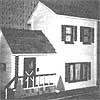
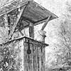

If you now operate-or have ever operated-a successful home business that was inspired by an article you read in MOTHER, tell us (in 500 words or less) when and where-and with how much "seed money"-you started your venture. Because if your story can be fitted into an upcoming installment of BOOTSTRAP BUSINESSES, you'll receive [1] the warm satisfaction of knowing that you helped someone else find the happiness you enjoy and [2] a free two-year new or renewal subscription to THE Mother Earth News (restricted) .
Not long ago I began looking for a way to replace the salary I'd relinquished by giving up the nine-to-five grind ... so my husband suggested that we take a look at some of MOTHER'S back issues.
There were a number of articles on woodworking, but Bob and I were particularly taken with several toymaking projects: "The Art of Making Wooden Toys", MOTHER NO. 18, page 36 . . . "Old-Timey Toys From Christmas Past", No. 54, page 102 ... and "Old-Timey Wooden Playthings", No. 60, page 70. In fact, my husband and I were so inspired with the idea of producing handmade toys that we promptly withdrew to our workshop and came up with a design for the construction of a dollhouse.
Bob already owned a table saw and a jigsaw, so the only tools we needed to buy were several paintbrushes and a utility knife. Next, we scrounged or-in a few cases-purchased an assortment of building and finishing materials (scrap lumber, nails, glass, fabric, paint, and accessories) ... for a total investment of $15. Then Bob set to work creating the five-room structure (complete with movable windows, miniature wooden furniture, and a stone hearth made from pebbles) . . . and when he'd finished, I started working on the shingling and interior decorating. I painted, papered, arranged furniture, and added all the necessary trimmings (such as bathroom fixtures, kitchen appliances, accessories to complement the fireplace, wall hangings, floor coverings, and potted plants).
When our labor of love was completed, my husband and I could no longer put off the task of pricing our masterpiece. So we embarked on a survey of the quality and cost of commercially made dollhouses, and discovered that there were structures selling for $70 to $90 each . . . models that were not nearly so durable as ours, required the addition of a number of accessories, and-for the most part-came in kit form (to be put together by the purchaser). Nevertheless, Bob and I decided to set our fee below the going rate-with the cost depending upon the size and degree of detail desired by each individual customer-and our most recent dollhouses have sold for $50 to $70 apiece.
My family and I have finally managed to establish a home-based enterprise that's been successful, rewarding, and-in short-exactly what we've been looking for . .. and we owe MOTHER our thanks for the inspiration.
Sue Brooks
Lake Odessa, Mich.
Like many MOTHER-type folks, my husband and I dreamed of breaking away from the tedium of the workaday world, but we didn't know how or where to begin. I'd taken a temporary leave from my job to give birth to our daughter Jessica-and had decided to make my voluntary unemployment permanent-but our family finances were beginning to get tight. Although Irvine and I had pared down our expenses as far as we could in order to make ends meet with only one salary, it soon became apparent that we were in need of another source of income.
At the time, we'd both been MOTHER-readers for quite a few years, and had seen numerous reports from folks who'd solved their money problems by starting small home-based enterprises. In fact, one of Irvine's co-workers had just begun a little side business selling houseplants at swap meets . . . and word of that fellow's undertaking called to mind an article entitled "The Organic Home Nursery" that we'd read in one of MOM'S back issues.
As a consequence, Irvine and I searched out MOTHER NO. 14 and gave the story on page 20 another perusal ... and when my husband's next payday rolled around, he cashed his check and purchased a truckload of beautiful green plants. Then-after spending $14 on local licenses and $10 on a tankful of gasoline-we carted our $60 worth of wholesale stock off to a nearby farmers' market and set up shop. That first day's earnings paid back our original investment and cleared a small profit to boot: The "Proteus Nursery" was in the making!
It's been only five months since Irvine and I became seedling salespeople, but we've made quite a bit of headway in that short period of time. As a result, we've been able to sell our house and purchase 3.5 country acres. Our plant-marketing enterprise is still a small-scale operation, but the business's success has been our family's key to independence.
Chris Knapp
New Smyrna Beach, Fla.
Back in 19751 decided to offers Chinese cooking class in my home. I'd completed a course in the culinary art myself, and I'd read MOTHER'S "How to Teach Almost Anything at Home" (issue 38, page 69), so I felt fairly confident that I could instruct others.
Since I had a large collection of recipes from which to choose, I gathered together the ones that had proved to be most successful. Then I invested a few dollars in two newspaper ads, and-before long-an impressive number of students had signed up for the class.
I charged $18 for four three-hour sessions (held once a week for a month) . . . and I supplied my proteges with copies of the recipes they were to learn, as well as with the opportunity to sample a delicious meal at the end of each lesson. My initial investment included $12 for cookbooks, $5.00 for paper and stencils, $17 for an extra wok p already owned an assortment of cooking utensiIs and serving dishes), and about $80 for groceries (though I've recently cut down on that expense by using less costly and more healthful homegrown ingredients, such as fresh beef and pork).
After I'd acquired some teaching experience, I raised my tee to $20 per person ... and established a class minimum of ten students. And-for the past few winters-I've been giving instruction at various community colleges throughout Saskatchewan, for which I'm paid $10 an hour, plus food and lodging for the duration of the course. (During 1977 I taught in 22 schools . . . and netted $3,080 from the college circuit alone.)
At the moment I'm gathering material for an advanced course in Chinese cuisine . . . and I'm considering a class in Italian cooking as well. I'll always have plenty of room to expand my enterprise ... after all, there's a whole world of culinary diversity out there!
Liz Hartsook
Eston, Sask., Canada
About five years ago-while working for the IBM Corporation-I joined a fellowship called The Kentucky Heritage Artists . . . a group which was to represent the Bluegrass State at a centennial art show in Washington, D.C. As it turned out, one of the paintings I displayed at the presentation proved to be a fairly popular piece, and my colleagues encouraged me to have it reproduced.
I'd been selling original art for a number of years, but I wasn't earning enough money from my creations to support myself . . . so I decided that peddling reproductions was worth at least a try. My initial investment totaled $2,700 for 1,500 prints. Cardboard (for packaging) and shipping costs brought my expenses up to about $3,000 ... but, fortunately, my stockpile of artwork sold well and I was able to recoup that expenditure within only two months.
I wasn't quite satisfied, however. I wanted complete independence, but I was still-for the most part-living the big-city life ... working full time at IBM and part time on my bootstrap enterprise. Then one day I read a Dear Mother letter by an artist named Richard von Hoorn (in issue 58, on page 158), who recounted the story of his successful mailbox-print endeavor in a rural Connecticut town ... and I became inspired to take my business back to the land.
I moved onto a 30-acre farmstead and set up my homebased operation. The market was extremely competitive, and I had my share of failures before learning "the tricks of the trade". But, after a while, I landed on my feet and gathered my hard-earned knowledge into a booklet entitled SurvivalGuidelines for Limited Edition Reproductions (available for $2.00, postpaid in the continental U.S.). This past year I reproduced two of my paintings ... printed in editions of 1,250 each. Eight hundred from each collection were numbered ... and then priced (wholesale) at $12.50 apiece. The remaining two groups of 450 were signed but not numbered, and tagged at $10 a print.
Time will tell, of course, just how much of that particular inventory will sell . . . but to date my artistic activity has kept me busier than I'd sometimes care to be. In fact, I've been so preoccupied with my new career that the bugs have overtaken my garden, and a longed-for pond and waterwheel may never get out of the planning stage. Nevertheless, I somehow manage to postpone a full day's work each and every time THE Mother Earth News (restricted) hits my mailbox!
Al Cornett
APD Box 34
Slade, Ky. 40376
|
|
 |
 |